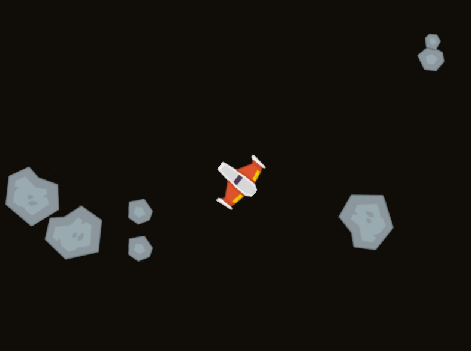

Asteroids Project Description
Overview
For this assignment, we will implement a version of the classic arcade game Asteroids.
Instructions
We will be using the same arcade library as previous projects. Please refer to their instructions for more information about setting up and configuring your development environment.
The following shows the game in action:
Game Rules and Specification
Ship
The ship obeys the laws of motion. When in motion, the ship will tend to stay in motion.
Note that the angle or orientation of the ship can be different than the direction it is traveling.
The right and left arrows rotate the ship 3 degrees to either direction.
The up arrow will increase the velocity in the direction the ship is pointed by 0.25 pixels/frame.
For collision detection, you can assume the ship is a circle of radius 30.
Bullets
Pressing space bar will shoot a bullet.
Bullets are should start with the same velocity of the ship (speed and direction) plus 10 pixels per frame in the direction the ship is pointed. This means if the ship is traveling straight up, but pointed directly to the right, the bullet will have a velocity that is at an angle up and to the right (starting with an upward velocity from the ship, and adding to it a velocity to the right because of the direction the ship is pointed).
There is no limit to the number of bullets that can be fired.
Bullets only live for 60 frames, after which they should "die" and be removed from the game.
For collision detection, you can assume that bullets have a radius of 30
Asteroids
There are 3 types of asteroids in the game:
Large Asteroids
Moves at 1.5 pixels per frame, at a random initial direction.
Rotates at 1 degree per frame.
For collision detection, can be treated as a circle with radius 15.
If a large asteroid gets hit, it breaks apart and becomes two medium asteroids and one small one.
The first medium asteroid has the same velocity as the original large one plus 2 pixel/frame in the up direction.
The second medium asteroid has the same velocity as the original large one plus 2 pixel/frame in the down direction.
The small asteroid has the original velocity plus 5 pixels/frame to the right.
Medium Asteroid
Rotates at -2 degrees per frame.
For collision detection, can be treated as a circle with radius 5.
If hit, it breaks apart and becomes two small asteroids.
The small asteroid has the same velocity as the original medium one plus 1.5 pixels/frame up and 1.5 pixels/frame to the right.
The second, 1.5 pixels/frame down and 1.5 to the left.
Small Asteroid
Rotates at 5 degrees per frame.
For collision detection, can be treated as a circle with radius 2.
If a small asteroid is hit, it is destroyed and removed from the game.
Other game rules
The game begins with 5 large asteroids.
All elements (ship, bullets, asteroids) should "wrap" around the edges of the screen. In other words, if an object goes off the right edge of the screen, it should appear on the left edge.
Architectural Design
The entire program will need to be implemented using the principles of encapsulation. Thus, you need to think about the different components (classes) that you will need in the game, and their various actions (methods) and properties (member variables). Before you start programing, you will need to produce UML class diagrams for each of the classes you will be using. Please pay special attention to the design of these components, so they can be as general-purpose as possible.
In addition, for this project you will be expected to use the principles of inheritance, polymorphism, and abstract methods. You should identify code that is shared among classes and put it in a common base class.
Getting Started
You will use the same framework and classes that you used for Pong and Skeet.
With each project, you have written more of the logic of the game and (hopefully) have become more familiar with the concepts of objects interacting, the game loop, etc. At this point, using the previous projects as a guide, you will start mostly from scratch to create your Asteroids project. A starter program with a few functions to help handle the keystrokes, etc., is a available at: asteroids.py.
Milestones
Starting a large project like this can sometimes seem overwhelming. So to help guide you through this process, a milestone deliverable will be required at the end of each week. More detailed information is contained below, but in short these milestones will require:
Milestone 1 - Stub functions and floating rocks
Milestone 2 - Ship and bullets working
Milestone 3 - Collisions and asteroids breaking apart
Final Project - Finish the project and add extra features
Assignments
You have four weeks to complete this project, with milestone submissions due along the way. Please note that this is a challenging project that will require you to apply several new and challenging topics. If you wait until the last week, you will not have time to complete the project.
This project will be broken up into the following assignment submissions:
Expectation to Excel
As explained in more detail in the Project link above, the requirements presented here are simply a base standard. To receive up to 100% on this assignment you are expected to show creativity and excel above and beyond what is specifically required.
Hints and examples
The following examples may be helpful:
Trig functions (sin, cos, tan) will likely be helpful in determining the x and y components of an angle. They can be found in the
mathlibrary and used as follows. (Note that they expect radians rather than degrees, and there are handy functions to convert between them.)
import math // used for sin, cos, and M_PI
...
speed = 10
angle = 60
dx = math.cos(math.radians(angle)) * speed
dy = math.sin(math.radians(angle)) * speed